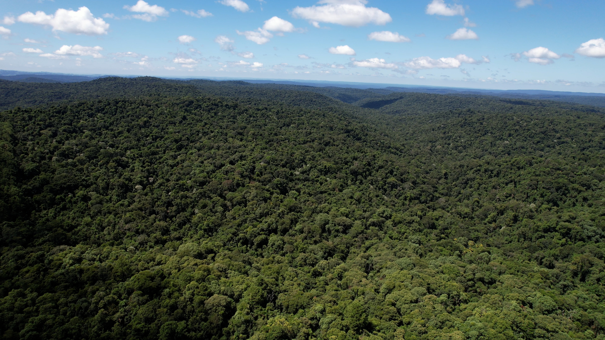
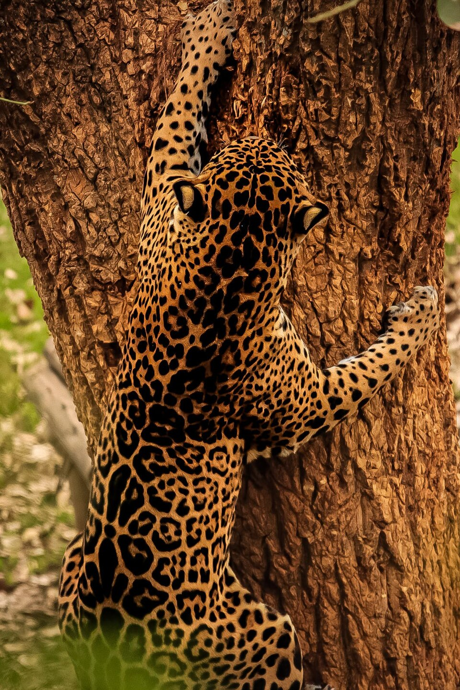

Provincia de Misiones · Argentina
Un territorio estratégico para la conservación de la biodiversidad
Misiones es una provincia del nordeste argentino que alberga uno de los ecosistemas de mayor biodiversidad del país: la Selva Paranaense, parte del Bosque Atlántico Sudamericano.
En este territorio, la conservación de los bosques, la protección de la fauna, la gestión de los recursos naturales y el desarrollo productivo forman parte de una misma visión: proteger el patrimonio natural y construir un modelo de desarrollo sostenible.
Misiones conserva más de 1,5 millones de hectáreas de bosque nativo, que representan aproximadamente el 52 % de la superficie provincial, y cuenta con una extensa red de Áreas Naturales Protegidas.
Su ubicación, entre Brasil y Paraguay, convierte a la provincia en un territorio clave para la conectividad de los ecosistemas y la conservación de la biodiversidad regional.
Misiones en datos
La dimensión de lo que se conserva
- 0 de bosque nativo
- 0 de la superficie provincial es bosque nativo
- 0 de bosque nativo bajo protección
- 0 Áreas Naturales Protegidas
- 0 Parques Provinciales
- 0 Reservas Naturales Privadas

Selva Paranaense
El corazón verde de Misiones
La Selva Paranaense es uno de los ecosistemas más diversos de Sudamérica y constituye uno de los principales patrimonios naturales de Misiones.
Sus bosques albergan una extraordinaria variedad de especies de flora y fauna y cumplen funciones ambientales esenciales: regulan el ciclo del agua, almacenan carbono, protegen los suelos, generan hábitats y mantienen la conectividad entre distintos ambientes naturales.
Misiones concentra uno de los últimos grandes remanentes de este ecosistema en Argentina. Conservar la Selva Paranaense significa proteger no solamente árboles y animales, sino también agua, suelo, biodiversidad, clima y servicios ecosistémicos fundamentales para las comunidades.
Biodiversidad
Una de las mayores riquezas naturales de la provincia
La diversidad de ambientes de Misiones permite la presencia de una gran cantidad de especies. La Selva Paranaense representa aproximadamente el 52 % de la biodiversidad de Argentina.

Yaguareté

Tapir

Mono carayá

Oso hormiguero

Pecarí

Águila harpía

Tucanes

Maracanás
La conservación de esta biodiversidad requiere proteger los ambientes donde viven las especies y mantener la conexión entre ellos.

Corredor Verde
Conectar para conservar
El Corredor Verde Misionero es una estrategia territorial destinada a conservar los principales bloques de Selva Paranaense y mantener la conectividad entre las áreas naturales.
La conexión entre los ambientes permite que las especies puedan desplazarse, reproducirse y mantener poblaciones saludables. En una provincia donde conviven áreas naturales, ciudades y actividades productivas, conservar la conectividad ecológica es fundamental.
Un bosque conectado es un ecosistema más resiliente.
Ubicación
Misiones en el mapa
En el extremo nordeste de la Argentina, entre Brasil y Paraguay. Movés el mapa y hacés zoom para recorrer el territorio; para acercar con la rueda del mouse, primero hacé clic sobre el mapa.
Base cartográfica: OpenStreetMap.

Áreas Naturales Protegidas
Una red para conservar el territorio
Misiones cuenta con 117 Áreas Naturales Protegidas, que en conjunto protegen aproximadamente 514.000 hectáreas de bosque nativo. La red incluye Parques Provinciales, Reservas Naturales Privadas, Monumentos Naturales y otras categorías de conservación.
Estas áreas cumplen funciones esenciales para la protección de la biodiversidad, la conservación de cuencas, la investigación científica, la educación ambiental y el mantenimiento de los servicios ecosistémicos.
Entre los territorios de mayor relevancia se encuentra la Reserva de Biosfera Yabotí, uno de los principales núcleos de conservación de la Selva Paranaense en Misiones.

Fauna Silvestre
Proteger las especies es proteger los ecosistemas
Misiones trabaja en la conservación de especies emblemáticas y amenazadas de la Selva Paranaense. El yaguareté, máximo depredador de la región, es una de las especies prioritarias para la conservación y su presencia es un indicador de la salud de los ecosistemas.
Las políticas de conservación incluyen monitoreo, investigación, protección de hábitats, prevención de amenazas, rescate y rehabilitación de fauna silvestre.
Conservar la fauna significa conservar el equilibrio de la selva.
Misiones, naturaleza que trasciende fronteras
Misiones conserva uno de los territorios de mayor valor ambiental de Argentina y forma parte de un ecosistema que trasciende las fronteras nacionales. Proteger sus bosques, su biodiversidad y sus recursos naturales es una responsabilidad provincial, pero también un compromiso con la región y con las futuras generaciones.
Conocer. Conservar. Restaurar. Innovar.
Misiones trabaja hoy para proteger el ambiente del mañana.